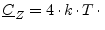

Many components do not produce any noise. Every element of their noise correlation matrix therefore equals exactly zero. Examples are lossless, passive components, i.e. capacitors, inductors, transformers, circulators, phase shifters. Furthermore ideal voltage and current sources (without internal resistance) as well as gyrators also do not produce any noise.
If one wants to calculate the noise wave correlation matrix of a component, the most universal method is to take noise voltages and noise currents and then derive the noise waves by the use of equation (1.1). However, this can be very difficult.
A passive, linear circuit produces only thermal noise and thus its noise waves can be calculated with Bosma's theorem (assuming thermodynamic equilibrium).
|  Re |
(2.39) |
| (2.40) |